Практичний досвід · журнал «ДентАрт» 2017 №2
Відбиткові матеріали для непрямої реставрації передніх зубів. Технологія Snap-set у вінілполісилоксанових відбиткових матеріалах
INDIRECT ANTERIORS – PRODUCTS SNAP-SET TECHNOLOGY IN THE VPS IMPRESSIONS MATERIALS
Процедура зняття відбитків має дуже велике значення для успіху ортопедичного лікування, оскільки отримані дані безпосередньо впливають на точність виготовлення і встановлення остаточної реставраційної конструкції. Хімічні і фізичні властивості еластомерних відбиткових матеріалів можуть позначитися на точності остаточних відбитків.
При виборі відбиткового матеріалу слід враховувати такі властивості, як консистенція і плинність, зручність у роботі, час затвердіння і стабільність параметрів форми.
Найбільш поширеними еластомерними матеріалами, які використовуються для виготовлення незнімних та знімних ортопедичних конструкцій, є вінілполісилоксани (ВПС) та поліефіри (ПЕ).
Вінілполісилоксанові відбиткові матеріали зручні в роботі і забезпечують високу стабільність і точність параметрів, пружне відновлення після зняття з піднутрень, мають низьку в'язкопружність, низьку ступінь спотворення, достатню міцність на розрив, нетривалий період затвердіння і можливість кілька разів відливати модель, використовуючи один відбиток.
При роботі з відбитковими матеріалами зазвичай слід знаходити компроміс між гарною плинністю і стабільністю. Однак матеріал для отримання точних відбитків Honigum на основі вінілполісилоксану особливий. Завдяки використанню реологічно активної матриці, запатентованої компанією DMG, матеріали Honigum-Light, Honigum-Mono і Honigum-Heavy забезпечують оптимальні результати за показниками. А різні версії матеріалу Putty компанії DMG перевершують конкурентну продукцію саме за тими параметрами, які мають найбільше значення для стоматолога і процедури лікування. Завдяки використанню унікальної технології Snap-set матеріал Honigum-Putty для ручного замішування забезпечує достатній робочий час і дуже нетривалий період затвердіння.
Клінічний приклад
Основні скарги пацієнта — занадто великі коронки на центральних різцях, що не відповідають кольору природних зубів.
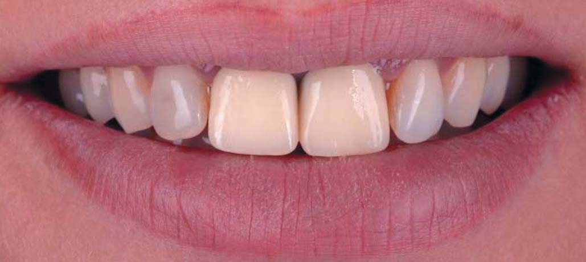
Основні скарги пацієнта — занадто великі коронки на центральних різцях, що не відповідають кольору природних зубів.
Внутрішньоротовий огляд показав погане прилягання коронок з оксиду цирконію на зубах 11 і 21, запалення ясен у пришийковій ділянці цих зубів, неадекватний контакт проксимальних поверхонь, надмірну опаковість і незадовільну форму коронок. Коронки видалено, і виконано заміну композитних реставрацій.
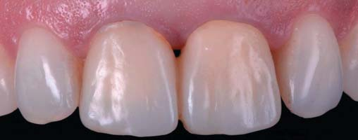
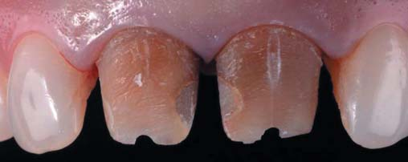
Внутрішньоротовий огляд показав погане прилягання коронок з оксиду цирконію на зубах 11 і 21, запалення ясен у пришийковій ділянці цих зубів, неадекватний контакт проксимальних поверхонь, надмірну опаковість і незадовільну форму коронок. Коронки видалено, і виконано заміну композитних реставрацій.
Тимчасові композитні коронки виготовлено безпосередньо в кабінеті з композиту Luxatemp з урахуванням початкової ситуації. Форма була змінена у ротовій порожнині за прямим мокапом з урахуванням параметрів сусідніх зубів.
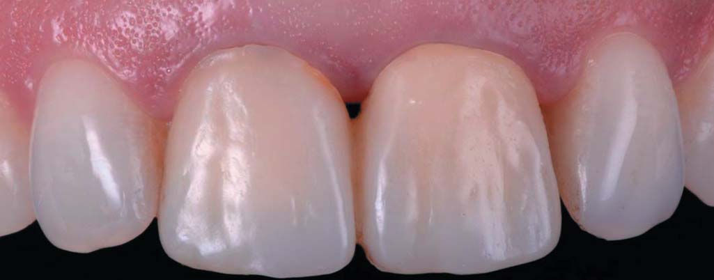
Тимчасові композитні коронки виготовлено безпосередньо в кабінеті з композиту Luxatemp з урахуванням початкової ситуації. Форма була змінена у ротовій порожнині за прямим мокапом з урахуванням параметрів сусідніх зубів.
Підбір кольору слід провадити до отримання відбитків для запобігання впливу зневоднення на колір зубів у процесі маніпуляцій.
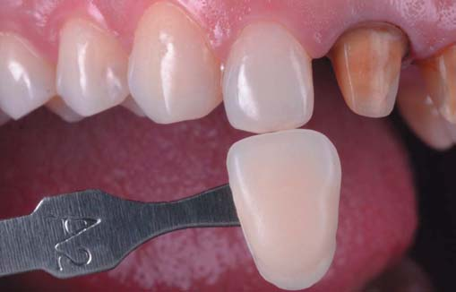
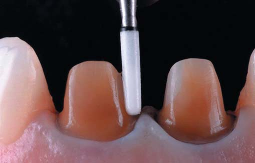
Підбір кольору слід провадити до отримання відбитків для запобігання впливу зневоднення на колір зубів у процесі маніпуляцій.
Після відновлення ясен уступи з вестибулярної поверхні зубів були поглиблені в під'ясенну зону через сильний дисколорит коренів. Остаточну обробку уступів зроблено арканзаським каменем. Фінішна обробка пришийкової зони провадилася з використанням ретракційної нитки для захисту епітеліального прикріплення.
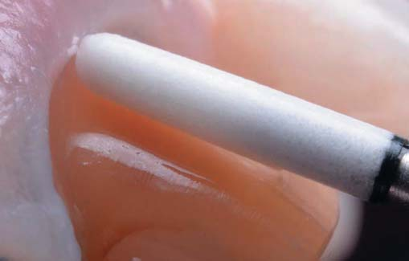
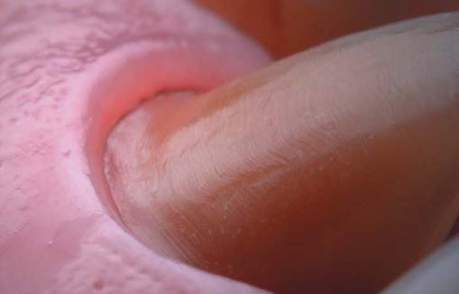
Остаточний вигляд після препарування.
Співвідношення межі препарування з ясенним краєм.
Після шліфування уступів було введено другу ретракційну нитку — для ретракції крайових ясен у горизонтальному напрямку. З боку ріжучого краю другий шар ретракційної нитки має бути видно повністю.
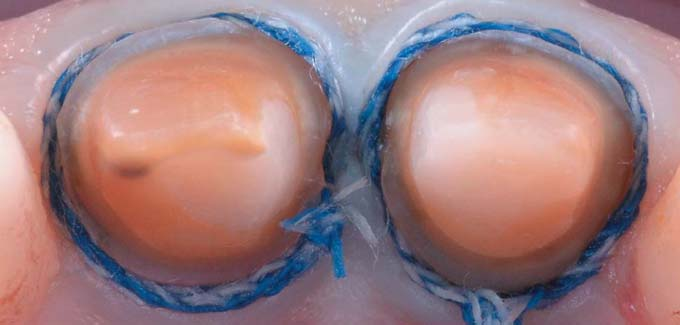
Після шліфування уступів було введено другу ретракційну нитку — для ретракції крайових ясен у горизонтальному напрямку. З боку ріжучого краю другий шар ретракційної нитки має бути видно повністю.
Вигляд ясен після видалення другого шару ретракційних ниток. Дуже добре видно простір для відбиткового матеріалу. У цьому клінічному випадку використовували відбитковий матеріал Honigum (DMG). Коригувальний шар дуже текучий і заповнює весь простір, підготований ретракційною ниткою.
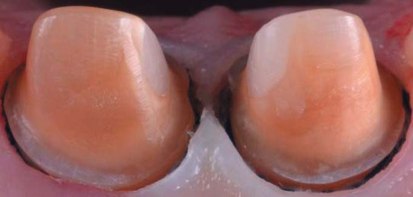
Вигляд ясен після видалення другого шару ретракційних ниток. Дуже добре видно простір для відбиткового матеріалу.
У цьому клінічному випадку використовували відбитковий матеріал Honigum (DMG). Коригувальний шар дуже текучий і заповнює весь простір, підготований ретракційною ниткою.
Honigum Putty — найбільш текучий матеріал, який я коли-небудь використовував. Завдяки технології Snap-set, розробленій компанією DMG, інноваційний матеріал Honigum Putty пропонує досі не перевершене поєднання зручного робочого часу і короткого часу затвердіння у ротовій порожнині. Його подовжений робочий час зводить «стрес змішування» до мінімуму. Деформація і мікрорухи матеріалу, вже введеного у ротову порожнину, зменшуються за рахунок швидкого затвердіння. Також це створює значно більший рівень комфорту для пацієнта.
Високі властивості текучості запобігають надмірному тиску матеріалу під час зняття відбитку, який у деяких випадках призводить до спотворення форми.
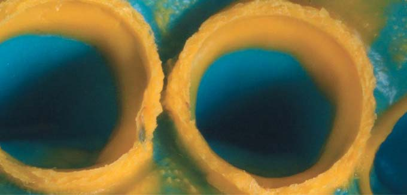
Honigum Putty — найбільш текучий матеріал, який я коли-небудь використовував.
Інші переваги цього матеріалу:
- винятково якісне відтворення деталей;
- чудова просторова стабільність;
- збалансована гідрофільність;
- нейтральний смак і аромат меду;
- дуже гарний відбиток ясенних борозен при використанні одноетапної методики.
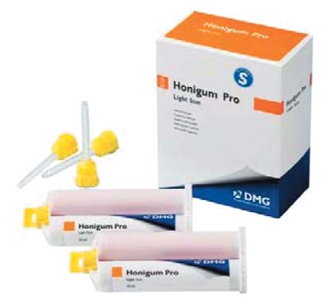
None
Після зняття відбитка визначено колір кукси зуба з використанням колірного еталону, виготовленого з матеріалу, що використовується для створення кукси.
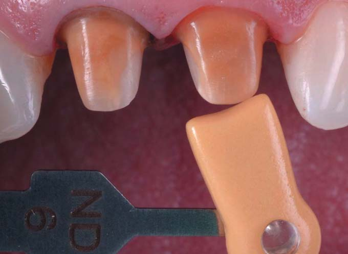
Після зняття відбитка визначено колір кукси зуба з використанням колірного еталону, виготовленого з матеріалу, що використовується для створення кукси.
Зовнішній вигляд контрольної моделі.
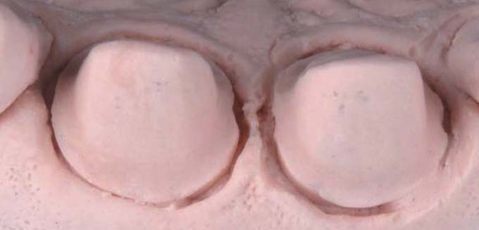
Зовнішній вигляд контрольної моделі.
Ізоляція перед фіксацією двох коронок. У цьому випадку було прийнято рішення фіксувати їх почергово за допомогою Variolink Esthetic DC (Ivoclar).
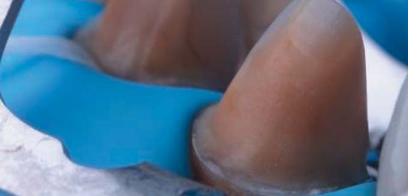
Ізоляція перед фіксацією двох коронок. У цьому випадку було прийнято рішення фіксувати їх почергово за допомогою Variolink Esthetic DC (Ivoclar).
Зовнішній вигляд двох коронок центральних різців безпосередньо після фіксації.
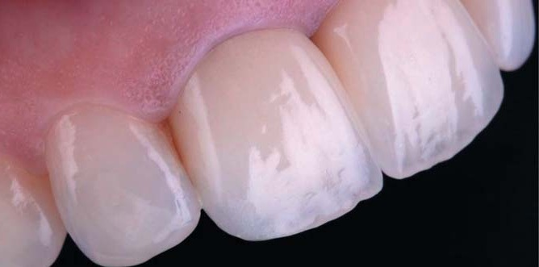
Зовнішній вигляд двох коронок центральних різців безпосередньо після фіксації.

Остаточний вигляд реставраційних конструкцій через місяць після фіксації.
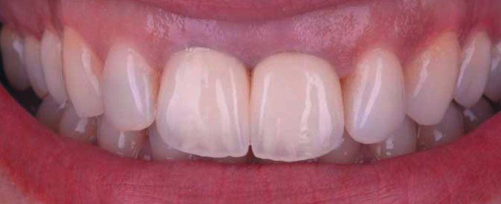
Лікар і пацієнт дуже задоволені кінцевим результатом.
Висновки
1. В описаному прикладі були виготовлені коронки з польовошпатної кераміки на вогнетривкій моделі.
2. Гарний відбитковий матеріал забезпечує високу точність керамічної реставраційної конструкції.
3. Технологія Snap-set забезпечує оптимальний робочий час і скорочує час маніпуляцій у ротовій порожнині.
Статтю надала компанія DMG з дружнього дозволу STYLE ITALIANO. Переклали і підготували в компанії CRYSTAL Pharma.
Література
- Braden M, Inglis AT. Visco elastic properties of dental elastomeric impression materials. Biomaterials 1986; 7: 45-8.
- Craig RG, Sun Z. Trends in elastomeric impression materials. Operative Dent 1994; 138-45.
- Chee WW, Donovan TE. Polyvinyl siloxane impression materials: a review of properties and techniques. J Prosthet Dent 1992; 68: 728-32.
- Mandikos MN. Polyvinyl siloxane impression materials: an update on clinical use. Aust Dent J 1998; 43:428-34.
- Lee EA. Impression material selection in contemporary fixed prosthodontics: technique, rationale, and indications. Compend Contin Educ Dent 2005; 26: 780, 782-4, 786-9.
- Visit: http://styleitaliano.org/snap-set-technology-in-the-vps-impressions-materials